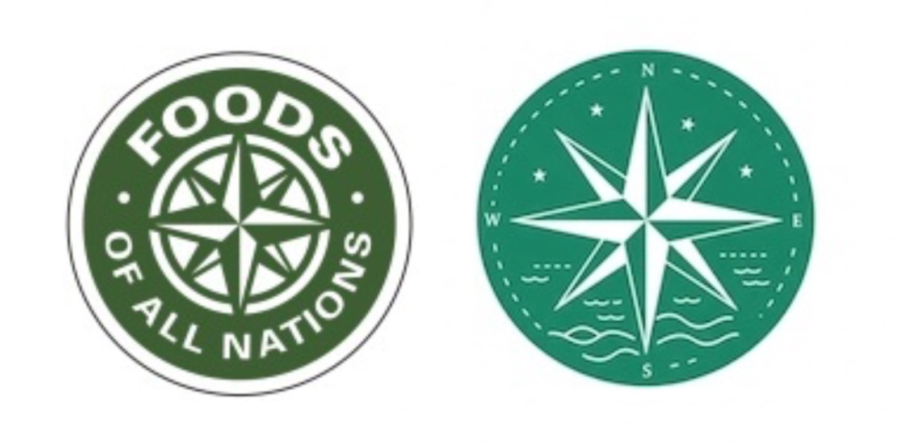

In this case study, we examine the possibilities of AI-assisted image creation with Google Gemini using Vibe Kayaks as an example. We analyze how modern AI tools can revolutionize marketing and product presentation.
Overview
1. Google Gemini Basics
Core Functions:
- Multimodal AI: Text-to-image generation
- Context Understanding: Precise implementation of image specifications
- Style Adaptation: Flexible adaptation to brand identity
2. Use Case Vibe Kayaks
Image Generation Scenarios:
| Application Area | Benefits | Challenges |
|---|---|---|
| Product Visualization | Rapid creation of product variants | Product detail accuracy |
| Marketing Material | Cost-effective content production | Brand conformity |
| Social Media | High content frequency | Authenticity |
3. Prompt Engineering
Effective Prompts:
- Product Focus:
- "High-end kayak in crystal clear mountain lake, aerial view, morning light"
- "Modern kayak storage system in contemporary garage setting"
- Lifestyle:
- "Family kayaking adventure, sunset, coastal scenery"
- "Solo kayaker exploring hidden cove, dramatic cliffs"
4. Best Practices
Successful Image Generation:
- Detailed Descriptions: Precise specifications for perspective, lighting mood, and environment
- Brand Elements: Integration of brand colors and style
- Quality Control: Multiple generation and selection
- Legal Aspects: Labeling of AI-generated images
5. Future Perspectives
The integration of AI-assisted image generation in marketing and product strategies is becoming increasingly important. For companies like Vibe Kayaks, this offers the opportunity to create high-quality visual material quickly and cost-effectively.
Time Savings
75%
vs. traditional production
Cost Reduction
60%
per image set
Content Variety
3x
more variations
6. Practical Task: AI Logo Generation for "Foods of All Nations"
In this practical exercise, we will explore the possibilities of AI-assisted image generation for creating a logo for a local food retailer called "Foods of All Nations".

Left: The original "Foods of All Nations" logo, Right: An AI-generated example
Task Description:
The class will be divided into groups, and each group will be tasked with generating a logo for "Foods of All Nations" using AI tools (such as Google Gemini, DALL-E, or Midjourney). Afterward, all logos, including the original logo, will be presented, and the class must figure out which one is the original logo.
Detailed Instructions:
- Research: Learn about "Foods of All Nations," a food retailer specializing in international specialties.
- Prompt Development: Create a detailed prompt that describes the brand identity, target audience, and desired aesthetics of the logo.
- Logo Generation: Use an AI tool of your choice to generate multiple logo variants.
- Selection and Refinement: Choose the best logo and refine it with additional prompts if necessary.
- Presentation: Prepare a brief presentation explaining your process and the final result.
Learning Objectives:
- Understanding the possibilities and limitations of AI-assisted logo design
- Developing effective prompts for specific design requirements
- Critical evaluation of AI-generated designs compared to professionally created logos
- Discussion of ethical aspects of AI use in graphic design
Note from the case material: When evaluating AI-generated logos, both aesthetic and functional aspects should be considered. An effective logo must not only be visually appealing but also communicate the brand identity, work in various sizes and formats, and stand out from competitors.
Example Prompts for Logo Generation:
- Basic Prompt: "Create a professional logo for 'Foods of All Nations', an international grocery store specializing in imported foods from around the world."
- Detailed Prompt: "Design a modern, clean logo for 'Foods of All Nations', a specialty grocery store featuring international foods. The logo should incorporate elements representing global cuisine, perhaps with subtle food icons or a stylized globe. Use colors that evoke freshness and diversity. The logo should work well in both color and black and white, and be recognizable at small sizes."
- Style-specific Prompt: "Create a vintage-inspired logo for 'Foods of All Nations' grocery store with a hand-drawn aesthetic. Include elements that represent international cuisine in a subtle way. The logo should have a warm, inviting color palette and typography that feels established and trustworthy."